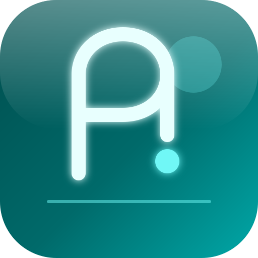

Web 聊天图片多模态
控制台输入框左下角可上传图片（最多 4 张、单张 ≤ 4MB），预览后随消息发送；以 Multimodal 格式交给大模型，视觉能力由所选模型 API 决定。
Vision · WebSocket
Jarvis 用 Rust 写成一个可执行文件，内嵌 Web 控制台与工具链。 自带分层记忆、Web 聊天图片多模态、**Discord / 飞书 / Telegram** 多通道、 Tree-sitter **代码**与 **Office/PDF 文档**工具—— 无需安装 Node.js、Python 或 Docker 才能运行本体（仅爬虫可选本机 Chrome）。
不是聊天壳，而是带记忆、人格、工具与通道的完整 Agent 运行时。
控制台输入框左下角可上传图片（最多 4 张、单张 ≤ 4MB），预览后随消息发送；以 Multimodal 格式交给大模型，视觉能力由所选模型 API 决定。
Vision · WebSocket自动跳过从其他系统同步来的无效路径（如 Mac 上的 C:\...）；弹窗可扫描本机 Claude / Cursor / Hermes 目录，或一键使用 config 同级 skills/ 并热重载。
会话历史与长期记忆协同：USER.md 记录你的偏好与画像，MEMORY.md 沉淀跨会话知识。Agent 启动时自动注入记忆层，越用越懂你。
L2 Long-term Memory工具失败与异常写入 ERRORS.md，跨会话注入提示词，避免重复踩坑。
Error Memory根据 USER.md 引导补齐年龄、职业等画像；对话风格与边界可随人格配置演进。
Profile · Onboardingskills/ 或本机 Agent 目录加载 SKILL.md，支持脚本工具与热重载；控制台 Skills 向导配置路径。
对接 Cursor、Claude 等 MCP 客户端；网关统一管理工具与会话。
Model Context Protocol读写、搜索、Diff 预览；可配置允许目录，安全可控地操作本机项目。
执行 PowerShell / 命令行任务，串联编译、脚本与运维操作。
内置调度器，按计划触发 Agent 或脚本，适合巡检、日报与自动化流程。
Chromium CDP 渲染动态页，搜索 + 抓取可落地文件；静态页亦可快速回退。
飞书长连接接入，与 Web 控制台共享同一套消息分发与工具能力。
Web UI 通道向导：Discord Bot Token 验证 + 邀请链接；Telegram 长轮询。定时任务结果可推送到各通道。
Gateway WebSocket读/写/搜索/编辑、工程树、符号定义与引用、跨文件重命名；Tree-sitter 解析 Rust / TS / Python 等。
Tree-sitter AST解析与编辑 PDF、Word、Excel、PowerPoint；提取文本、表格替换、Markdown 转 Office。
Material 风格聊天（含图片上传）、Skills / 通道配置向导、定时任务与 MCP 管理；Windows 支持登录自启动与后台运行。
安装包托管在 GitHub Releases，请从下方链接或 Release 页面下载。
正在加载版本信息…
Windows 安装向导含功能摘要；完整图文见 intro.html。
%LOCALAPPDATA%\Jarvis\config.toml。JarvisAgent.exe --gateway。http://127.0.0.1:8080/webui/；在 Skills 标签配置目录，聊天框可上传图片。http://127.0.0.1:8080/webui/，在 配置 中填写 API Key。